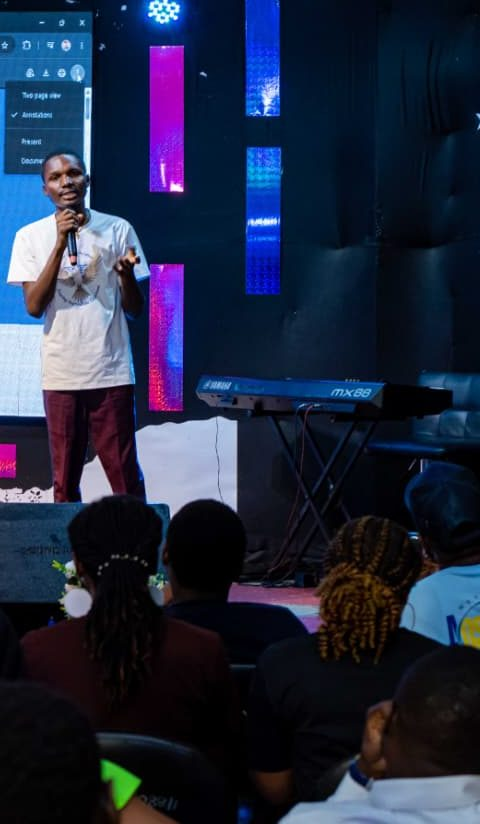
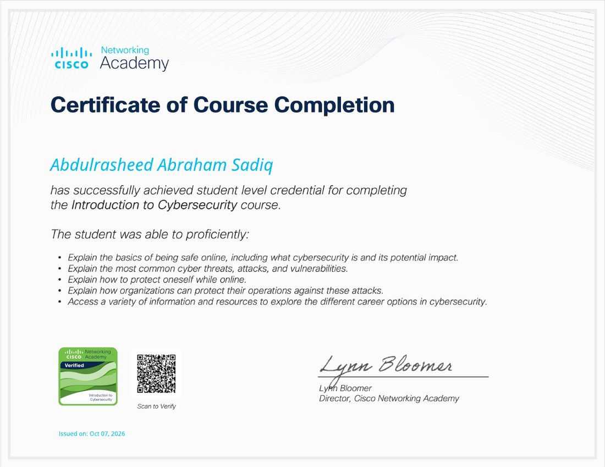
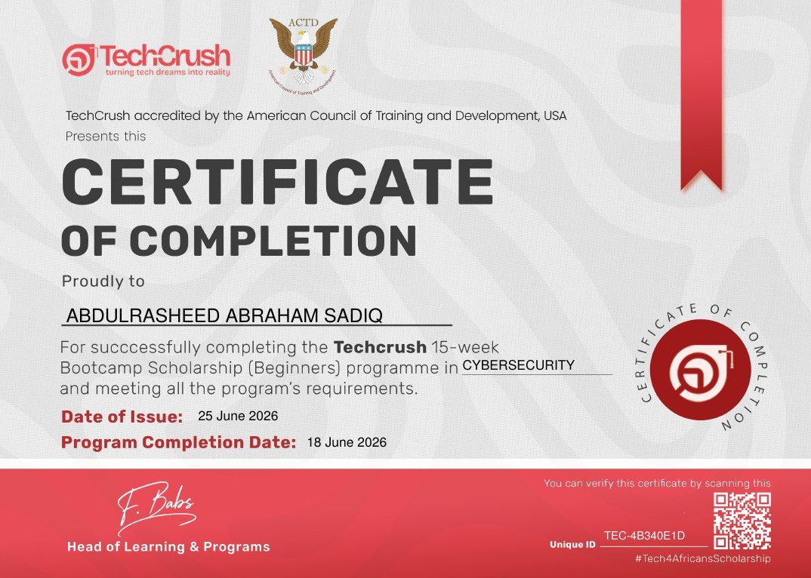
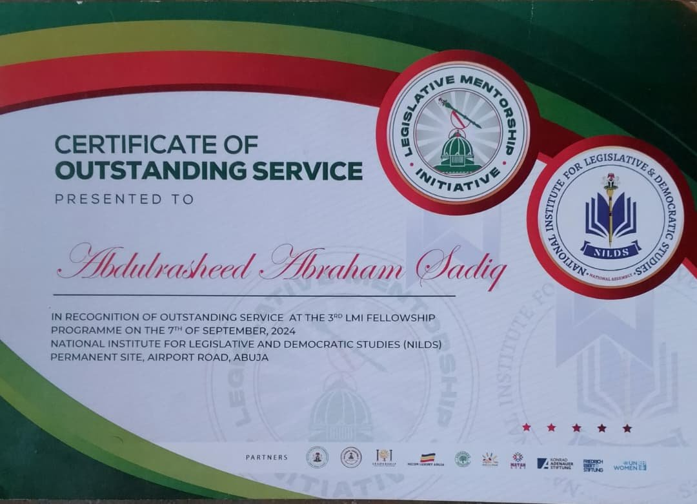
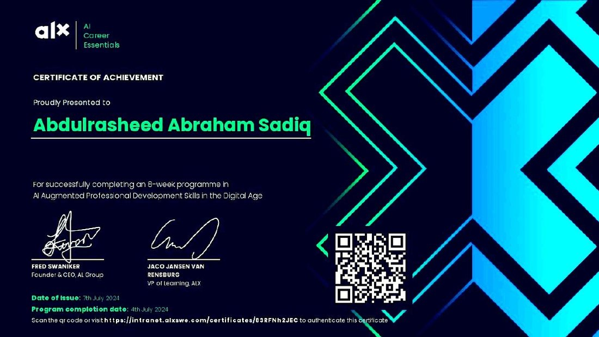
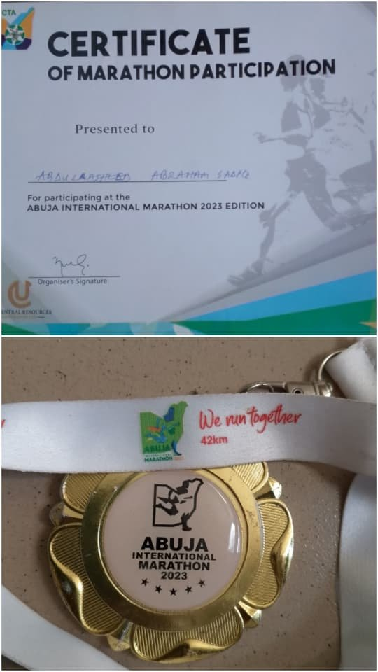
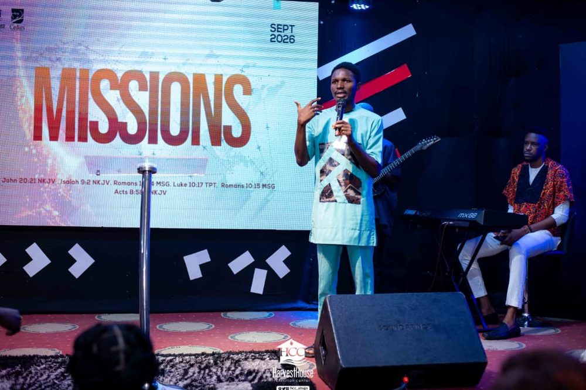

About me
An educator, volunteer and community builder helping teens leave secondary school with clarity and purpose.

Who I am
I’m Abdulrasheed Abraham Sadiq. For years I’ve taught mathematics and other subjects, and I serve as Administrative Officer at Teens Connect Africa, where I help run monthly mentorship sessions and programmes that trained over 50 teenagers in essential skills in 2024.
Most of my work is hands-on: researching, preparing materials, coordinating, tutoring and creating safe spaces where teens can discover skills and direction.
That commitment inspired Better Days Education, the organisation I started to help teens find purpose and make better choices before they finish secondary school. I’m also a writer, storyteller and motivational speaker, and I use those skills to teach and inspire.
My community work includes environmental and child-protection initiatives. I took part in Project Keep Zuba Clean, joined CADSI’s child-protection programme, and have advised on child-led events organised by Save the Children.
Educational background and experience
| Programme | Institution | Years | Status |
|---|---|---|---|
| B.Sc. Cybersecurity | MIVA Open University | 2025 to 2029 | In progress |
| Role | Organisation | Period | Highlights |
|---|---|---|---|
| Founder and Lead Tutor | Better Days Education | Current | Private tutoring, teen development programmes and purpose sessions for teenagers aged 13 to 19. 13+ students taught one-on-one. |
| Administrative Officer | Teens Connect Africa (NGO) | June 2022 to present | Helps run monthly mentorship sessions and programmes that trained over 50 teenagers in 2024. Research, preparing materials and coordination. Best Volunteer, 2025. |
| Volunteer coordinator | Save the Children International | June 2024 | One of the coordinators of a climate change programme in my local community. |
Career aspirations
I’m building two careers that feed each other: educator and founder, and cybersecurity professional. On the education side, I want Better Days Education to grow from tutoring and school programmes into a leading educational consulting brand. On the technology side, I’m studying for a B.Sc. in Cybersecurity and exploring how AI and web3 can expand opportunities for young people.
- NextSecure partnerships with schools, expand our outreach and visibility, and build structured student development programmes.
- In five yearsOpen our own building where we serve teenagers directly, while sending teams into schools as consultants.
- In eight yearsBe a leading educational consulting brand with proven records of impact across the education sector.
Skills
- Teaching and mentoring
- Mathematics and science tutoring
- Personalised lesson planning
- Purpose and life-skills coaching for teens
- Creating safe learning spaces
- Writing and speaking
- Writing
- Storytelling
- Public and motivational speaking
- Writing on web3 and blockchain trends
- Technical skills
- Cybersecurity fundamentals
- AI career skills and AI tools
- Leadership and administration
- Programme coordination
- Youth mobilisation
- Research and preparing materials
- Monthly mentorship sessions
Certifications and awards
Select a certificate image to open it in a new tab.
| Title | Issued by | Date | Certificate |
|---|---|---|---|
| Introduction to Cybersecurity | Cisco Networking Academy | 7 Oct 2026 | View |
| Cybersecurity Bootcamp Scholarship (15 weeks, beginners) | TechCrushAccredited by the American Council of Training and Development, USA, as printed on the certificate. Certificate ID TEC-4B340E1D. | 25 Jun 2026 | View |
| Mobilizing Young Advocates to Address Child Sexual Abuse through Strategic Actions (MY-ACTSa) workshop | CADSI | 9 Dec 2025 | View |
| Best Volunteer | Teens Connect Africa | 2025 | View |
| Certificate of Outstanding Service, 3rd LMI Fellowship Programme | Legislative Mentorship Initiative, NILDS | 7 Sep 2024 | View |
| AI Career Essentials | ALX Africa | 7 Jul 2024 | View |
| Abuja International Marathon, participation | Abuja International Marathon | 2023 | View |
-

Introduction to CybersecurityCisco Networking Academy -

Cybersecurity Bootcamp ScholarshipTechCrush -

MY-ACTSa advocacy workshopCADSI -

Best VolunteerTeens Connect Africa, 2025 -

Certificate of Outstanding ServiceLegislative Mentorship Initiative, 3rd LMI Fellowship -

AI Career EssentialsALX Africa -

Abuja International MarathonParticipation certificate and 42km medal, 2023
Hobbies and interests
- Public speaking and storytellingI use stories and speaking to teach and inspire.
- WritingI write about web3 and blockchain trends and how technology can expand opportunities for young people.
- RunningI took part in the Abuja International Marathon in 2023 and came home with the 42km medal.
- Community serviceProject Keep Zuba Clean, and a climate change programme with Save the Children International.
- Technology and learningCybersecurity, AI tools, and how technology can serve social good.

Let’s work together
I’m open to collaborating on youth, education or sustainability projects, volunteer opportunities with NGOs focused on teens, and partnerships that use AI or web3 for positive social impact.